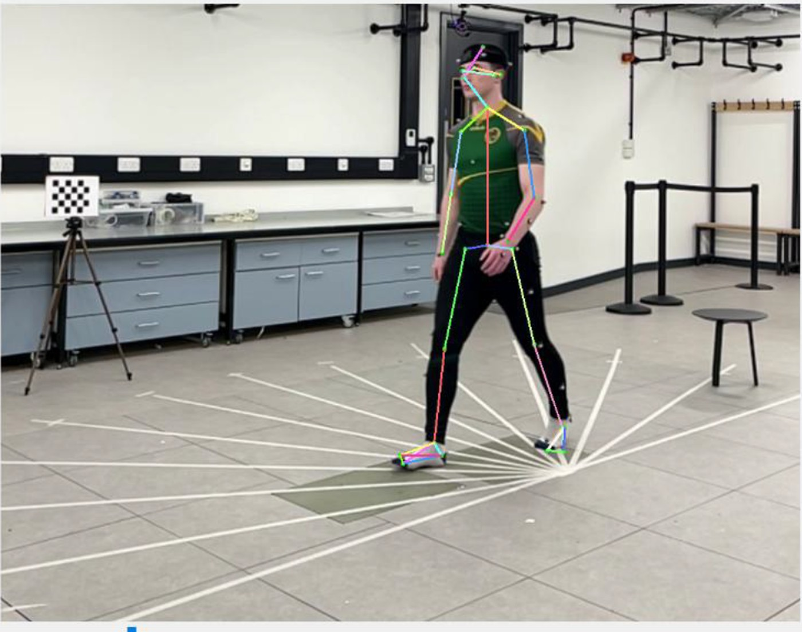

Undergraduate dissertation2024–25
Accuracy of 3D human pose estimation from varied viewing angles
This undergraduate dissertation project investigated how the viewpoint of single camera footage affects the accuracy of human motion tracking. The study compared accuracy of 2D and 3D human pose estimation (HPE) systems validated against a Vicon optical motion capture ground truth. To achieve this I developed software to visualize HPE data and compare it with the ground truth in order to calculate error metrics.